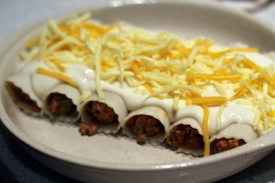

Canelones De Carne

ingredientes:
- 500 gramos de carne picada(mezcla de ternera y de cerdo)
- Una cebolla
- Un pimiento verde
- Tomate frito(1 bote)
- 20 laminas de canelones
- Queso rallado para gratinar
Preparacion:
- Para hacer canelones caseros comenzaremos con el relleno. Ponchamos la cebolla y el pimiento verde a fuego lento.
- Una vez pochado agregamos la carne picada, salpimentamos.
- Agregamos el tomate frito . Dejamos cocinar unos cuatro o cinco minutos y reservamos.
- Por otra parte cocemos las laminas de canelon como indique el fabricante.
- Una vez que lo tengamos ya cocido la ponemos en un paño de algodon y procedemos a rellenarlos. Ponemos una pequeña cantidad de carne en la lamina de pasta y cerramos con mucho cuidado
- Ponemos en una bandeja de horno todos los canelones formados y cubrimos con la bechamel. Introducimos al horno a 200° durante unos 10 minutos y terminamos los ultimos 3 minutos con el gratinador